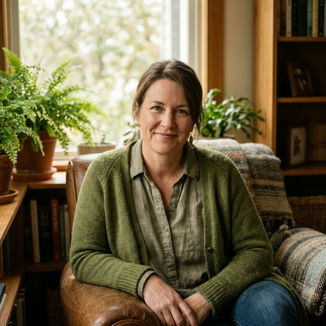

Dezvoltare personală · Feminitate · Armonie
Transformare prin autenticitate
Descoperă serviciile
Despre mine
Sunt Iulia Linga — Master Practician NLP, femeie, mamă a 4 copii, într-o căsătorie de 20 de ani. Am trăit, am simțit, am crescut — și din toată această experiență s-a născut dorința de a ghida și alte femei spre propria esență.
Pasiunea mea pentru dezvoltarea personală și feminitate a condus la crearea unor programe transformaționale unice: Arta de a fi Femeie, Arta de a fi tu însuți, Armonie din interior și Drumul meu.
„Viața pe care o meriți începe cu alegerea de a crește.
Începe călătoria acum."
Servicii
Alege calea care rezonează cu tine
Recenzii
Citește gândurile sincere ale femeilor care au fost exact acolo unde ești tu acum și care au ales să-și schimbe viața.